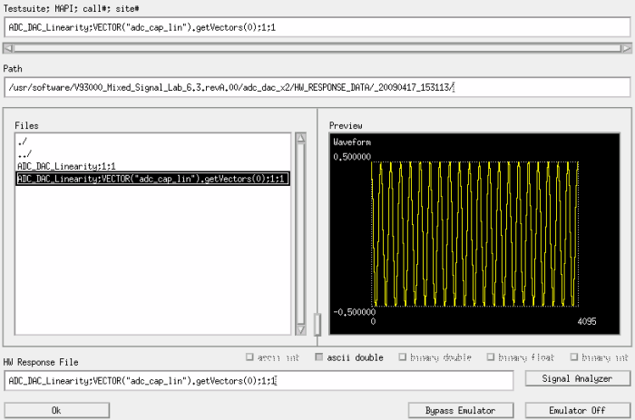

ARRAY_X type
This Hardware Response Emulator ARRAY_X Dialog window opens when one of the following APIs is executed offline using the emulator in "Store" mode:
ANALOG(set).DGT(pin, core).getWaveform(measurement);ANALOG(set).DGT(pin, core).getComplexWaveform(measurement);ANALOG(set).DGT(pin, core).getDebugWaveform(measurement);ANALOG(set).TIA(pin, core).getResult(pin1[,pin2]);Vector(variable).getVectors(size);
The window also opens when ANALOG(set) is replaced with
Analog in any of the API calls.

To create user-provided data with a text editor, do as follows:
- Select a file in the Files list and click OK. The dialog closes and the selected file is copied to the hardware response file for the API specified in the Testsuite;MAPI;call#;site# field. The file you select here is a dummy file, the data in the file will be replaced with new data in the next step.
- Using a text editor, open the hardware response file in the specified hardware response directory and enter user-provided data for TIA or digital capture tests.
- Use the text editor to save the hardware response file.
Testsuite;MAPI;call#;site# |
This field displays the test suite name and test method API that takes the hardware response data specified in this dialog. Further, a counter corresponding to how many times the test method API is called with the test suite (call#) and a query focus site number (site#) are shown. This expression corresponds to the name of the hardware response file to be created by this dialog. You cannot modify the value in this field. |
Path |
This field specifies the path of the directory containing the files in the Files list. When this dialog is opened, this field displays the current hardware response directory. |
Files |
This list contains the files in the directory specified in the
Path field. You can select a file from this list by clicking a file
name. The selected file is highlighted, displayed in the Preview
field, and will be used as a hardware response file by copying to the name,
|
Preview |
This field displays the waveform data that is contained in the selected file in the Files list. When the selected file is loaded, the file type is automatically detected for processing the data in the file. If the waveform is not displayed correctly, it may be effective that you change the selection of the file type using the checkboxes below the Preview display. They are available if the file is detected as a possible type. Further, one of the selectable type will automatically be selected according to the following priority: ASCII int -> ascii double -> binary float -> binary double -> binary int If you change the selection of the check buttons, the selection is memorized per user account. The memorized selection will be applied in advance in the above priority for the automatic selection. For example, if the file is detected as either binary double, binary float or binary int type format, the check buttons for these types will be selectable. And the binary double button will be checked automatically because it is the highest priority type between the candidates. In this situation, you can also change the selection to the "binary float" type. This selection will be memorized for the user account, and the "binary float" type will be selected for the same situation. If only the "binary int" type is selectable, you can unselect the check button. This means you can unselect all the check buttons as an exception. This is helpful for disabling the preview feature if you feel displaying the "binary int" type is too slow. Right-clicking the Preview display toggles it between the regular display and the Fourier transformed waveform. Note that the Preview display can plot the first 1048576 points and the points after the 1048577th will not be used for Fourier transforming. To zoom in on part of the preview, drag a rectangle around the desired area with the mouse. To zoom out, select an area larger than the graph frame, or click the middle button of the mouse on the preview display. |
HW Response File |
This field displays the name of the hardware response file that is assigned to the test method API specified in the Testsuite; MAPI; call#; site# text box. If a file name is selected in the Files list, it is displayed in this field. You can specify a desired name in this field; however the file will be copied to the correct file name for the hardware response file ("Testsuite;MAPI;call#;site#") when the OK button is clicked in this dialog. Further, you can rename the hardware response file from the command line so that call# and/or site# are empty, such as below.
If call# is not specified, the file is used for the entire call count, and if ;site# is not specified, the file is used for all the sites. If ;call#;site# is not specified, the file is used for all the call count and sites. |
OK |
This field applies the current settings of the dialog to the emulator and closes the dialog. |
Bypass Emulator |
This field skips creating or updating the hardware response file with the emulator and closes the dialog without applying the settings. The test execution continues according to the emulator mode. |
Cancel Emulator |
This field switches the emulator off and closes the dialog. The subsequent test execution continues without using the emulator. |
Functional changes
- Introduced before SmarTest 6.3.2